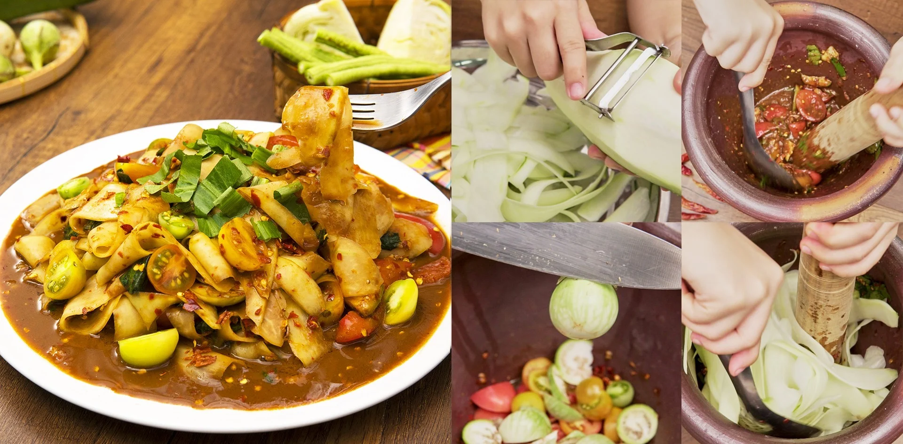
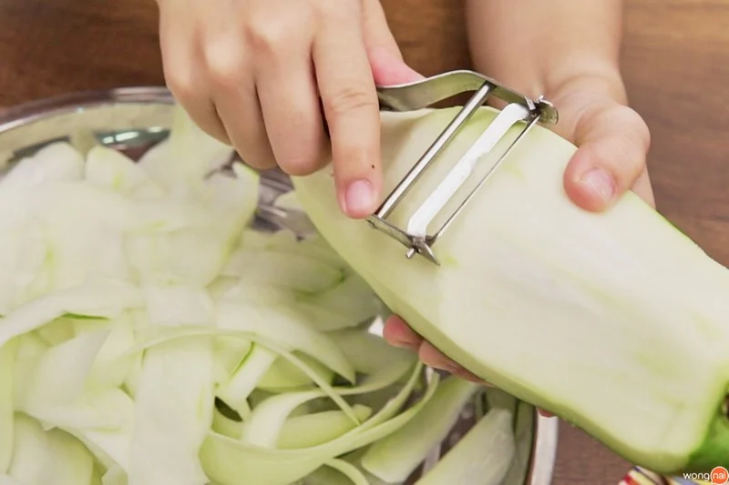
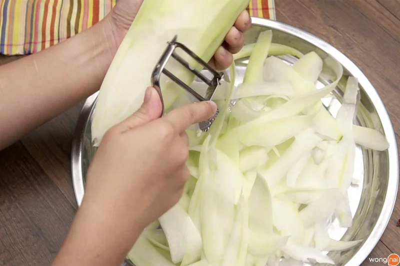
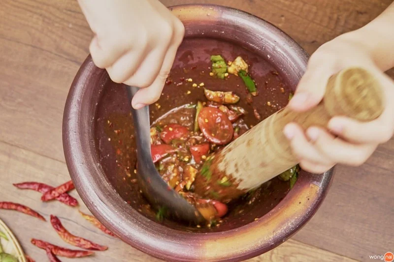
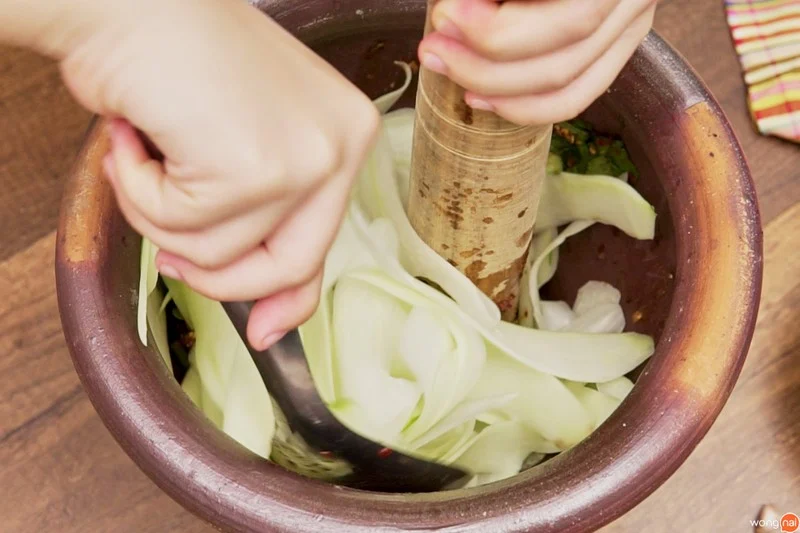
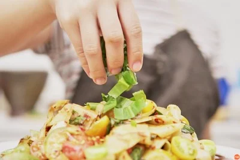

วิธีทำ “ตำหลวงพระบาง” เมนูอาหารอีสานสุดแซ่บ ทำง่ายฟินยกครก!
จกปลาร้านัว ๆ แซ่บสุด ๆ ฟินแบบยกครก กับเมนู “ตำหลวงพระบาง” ที่มาพร้อมวิธีทำที่ทำตามได้ไม่ยาก
พร้อมแล้วตามมาเข้าครัวกันเลย!

วัตถุดิบเมนู “ตำหลวงพระบาง”
วัตถุดิบ
- 1. มะละกอ 1 ลูก
- 2. พริกแห้ง 15 เม็ด
- 3. มะเขือเทศสีดา 4 ลูก
- 4. มะเขือส้ม 6 ลูก
- 5. กระเทียมไทย 8 กลีบ
- 6. มะเขือเปราะ 4 ลูก
- 7. น้ำมะนาว 4 ลูก
- 8. น้ำปู้ 1 ช้อนโต๊ะ
- 9. กะปิ 1 ช้อนโต๊ะ
- 10. น้ำปลาร้า 3 ช้อนโต๊ะ
- 11. น้ำตาลทราย 1 ช้อนโต๊ะ
- 12. ผักชีฝรั่งซอย 5 ใบ
วิธีทำ ตำหลวงพระบาง
STEP 1 : ขูดมะละกอ

นำที่ปอกมาขูดมะละกอให้เป็นแผ่นบาง ๆ ขนาด 1.5 นิ้ว

แล้วนำมาพักไว้เพื่อนำไปตำ
STEP 2 :ตำ
ตามด้วยมะเขือส้ม มะเขือเปราะ และผักชีฝรั่งซอย แล้วใช้สากบีบมะเขือเล็กน้อย

ปรุงรสโดยการใส่น้ำตาลทราย น้ำปู้ กะปิ ปลาร้า
ปรุงรสโดยการใส่น้ำตาลทราย น้ำปู้ กะปิ ปลาร้า
และน้ำมะนาว จากนั้นเคล้าให้เข้ากัน

ใส่เส้นมะละกอลงไป แล้วใช้ทัพพีคลุกเคล้าให้เข้ากันทั่ว ๆ
ใส่เส้นมะละกอลงไป แล้วใช้ทัพพีคลุกเคล้าให้เข้ากันทั่ว ๆ
เพื่อให้น้ำส้มตำเคลือบอยู่บนเส้น
STEP 3 : จัดเสิร์ฟ

ตักเสิร์ฟใส่ลงในจานแล้วโรยด้วยผักชีฝรั่งซอย
เสิร์ฟพร้อมกะหล่ำปลีและถั่วฝักยาว เท่านี้ก็ฟินสุด ๆ แล้วล่ะจ้า
ทั้งแซ่บและยังทำง่ายอีกด้วยใช่ไหมคะ กับเมนู “ตำหลวงพระบาง” ที่จิ๋วได้พาเพื่อน ๆ ทำกันในวันนี้ หรือถ้าอยากทำเมนูแซ่บ ๆ จิ๋วขอแนะนำสูตรเมนู “ส้มตำหอยแครง”
ให้ได้ลองทำตามกันที่บ้าน ทำแล้วอย่าลืมโพสต์รูปมาอวดกันด้วยนะคะ